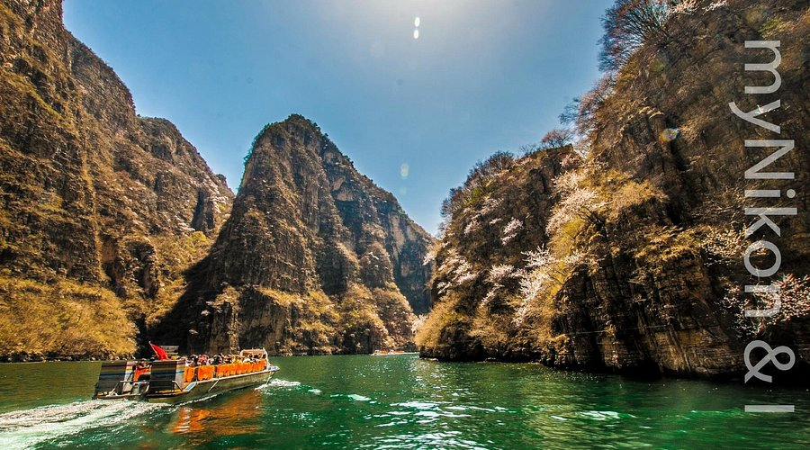

Top 3 Nature Spots in Taiyuan
Mian Mountain
Introduction
Mian Mountain, 60 kilometers northeast of Taiyuan, is a 62-square-kilometer scenic area known for its waterfalls, hot springs, and forested peaks. Its name (meaning “Cotton Mountain”) comes from the soft, misty clouds that often wrap around its slopes. Key spots include: “Flying Rock” (a 10-meter-wide boulder perched on a cliff, looking like it’s floating), “Longquan Waterfall” (a 30-meter-tall waterfall that freezes into ice sculptures in winter), and “Yunfeng Temple” (a Buddhist temple built into a cave, with panoramic views). The mountain also has natural hot springs (38–40°C) rich in minerals—perfect for soaking after a day of hiking.
Best Time to Visit
Autumn (Oct–November): Maple leaves turn red and gold, 8–16°C—great for hiking.
Winter (Dec–February): Hot springs are popular, and the waterfall’s ice sculptures are a highlight (0–5°C).
Summer (June–August): Cool (18–25°C) and green—escape Taiyuan’s heat.
Price
120 CNY/adult, 60 CNY/students, free for kids under 1.2 meters.
Hot spring entry: 150 CNY/adult, 80 CNY/kids (includes towel and locker).
Cable car (one-way): 50 CNY/adult, 25 CNY/kids.
Longmen Grottoes (Taiyuan Branch)

Introduction
Taiyuan’s Longmen Grottoes are a smaller, quieter version of Luoyang’s world-famous grottoes—carved into a sandstone cliff along the Fen River, 30 kilometers from Taiyuan. Built between the Northern Wei and Tang Dynasties (494–907 AD), there are over 1,000 Buddhist statues (ranging from 10 centimeters to 10 meters tall) and 200 cave paintings. The most impressive statue is the “Great Buddha of Taiyuan”—a 10-meter-tall seated Buddha with a calm expression, carved in the Tang Dynasty. Unlike Luoyang’s crowded site, Taiyuan’s grottoes let you get up close to the carvings and take photos without crowds.
Best Time to Visit
Spring (April–May): Mild (12–18°C), fewer crowds.
Autumn (Sept–October): Cool (10–16°C), clear skies.
Avoid rainy days— rain can make the cliff paths slippery.
Price
50 CNY/adult, 25 CNY/students, free for kids under 1.2 meters.
Parking fee: 10 CNY/car (if you drive).
Qinglong Gorge

Introduction
Qinglong Gorge (“Green Dragon Gorge”), 40 kilometers north of Taiyuan, is a narrow gorge carved by the Fen River—known for its clear water, steep cliffs, and hidden waterfalls. The gorge is 5 kilometers long, with a river running through its center—you can take a 30-minute boat ride (in small wooden boats) to explore its depths, passing cliffs covered in green moss and small waterfalls that drip into the river. There are also hiking trails along the gorge walls: the “Dragon Back Trail” is a moderate 2-hour hike that leads to a viewpoint with panoramic views of the gorge. In summer, the gorge stays cool (20–25°C), making it a popular escape from Taiyuan’s heat.
Best Time to Visit
Summer (June–August): Cool (20–25°C), perfect for boat rides and wading.
Spring (May): Wildflowers bloom along the trails, 15–20°C.
Winter (Dec–February): The river freezes in parts— not ideal for boating, but quiet for hiking.
Price
60 CNY/adult, 30 CNY/students, free for kids under 1.2 meters.
Boat ride: 40 CNY/adult, 20 CNY/kids (included in some combo tickets).